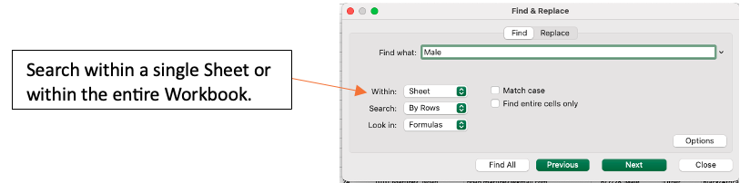
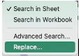
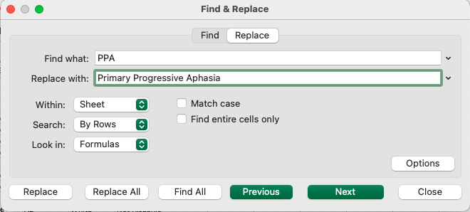
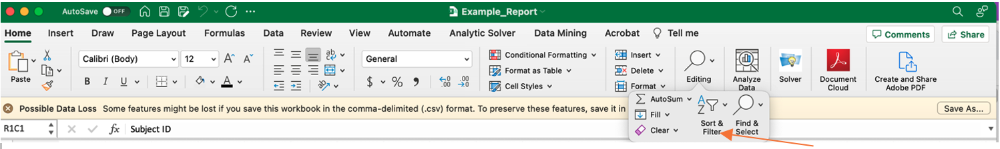
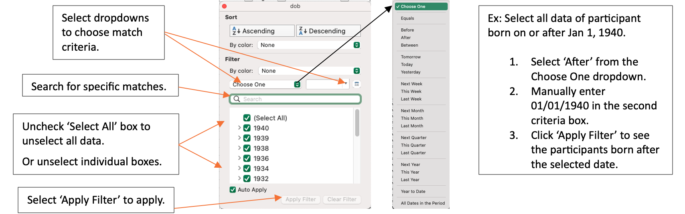
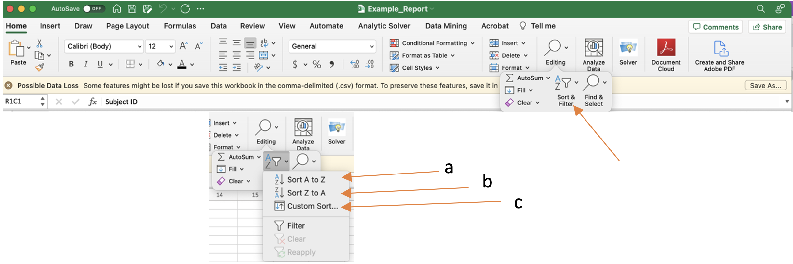
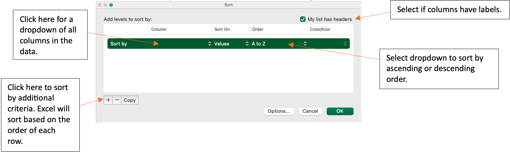
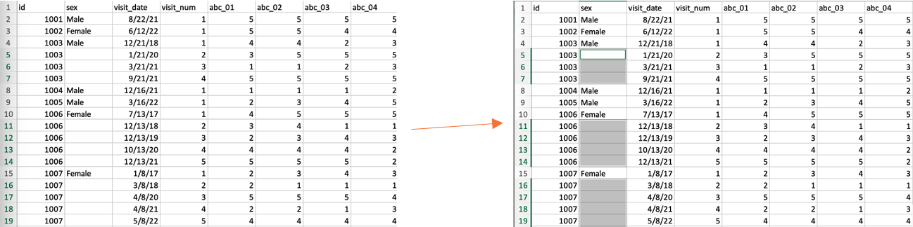
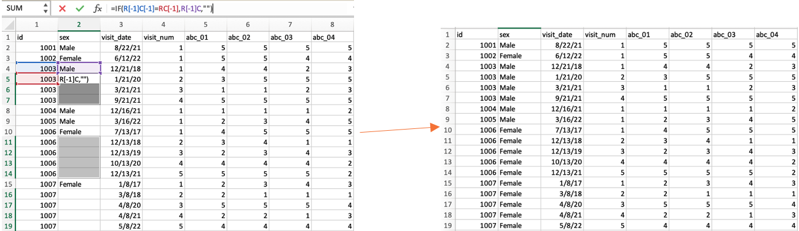

3 Excel Features SOP
This document functions as an instruction manual for Excel features commonly used after a REDCap Report is downloaded. All examples were created using the az_demo and az_test datasets from the Candidate Data Challenge, which contain computer-generated sample data.
Note: An important step to conserve the order of the original data is to add an index column. Left click the first column. Select ‘Insert’ from the dropdown. Title the new column ‘Index’. Enter a 1 in the first row with data, a 2 to the second row, and a 3 to the third row. Select the cells with the 1, 2, and 3 indexes. Double-click on the small box on the lower right-hand side of the selected cells, which will auto-populate index values for all rows that contain data.
3.1 Find
- Highlight the data you wish to search. Use the shortcut ‘Ctrl + F’ on a Windows or ‘Cmd + F’ on a Mac OR select the magnifying glass icon in the navigation pane.
- Enter the search keywords into the search bar and press enter to view.
- Continuing to press enter will cycle through all locations of the search keyword in the spreadsheet. Ex:
- For a more advanced search, use the ‘Advanced Search’ window. 
3.2 Find & Replace
Highlight the data you wish to search and replace. This can include a single or multiple columns, or the entire spreadsheet.
Use the shortcut ‘Ctrl + F’ on a Windows or ‘Cmd + F’ on a Mac OR select the magnifying glass icon in the navigation pane and select ‘Replace…’ from the dropdown. 
Enter the search keywords into the ‘Find what’ search bar.
- Enter the replacement into the ‘Replace with’ search bar. Ex: Replace a PTID with leading zeros. 
Click ‘Replace’ for a single cell replacement or ‘Replace All’ to replace all selected data.
3.3 Filter Data
Filters can be used to obtain desired data or remove unwanted data. To remove unwanted data from a spreadsheet, filter the data to obtain what is NOT wanted, then delete those rows. When the ‘Clear’ filter is applied, the undesired rows will be removed from the spreadsheet. A filter will not remove the rows from the spreadsheet until the user manually deletes the rows.
- To Sort or Filter data, begin by selecting the columns or rows you wish to filter. To add filters to all columns, click the downward triangle icon in the upper lefthand corner of the spreadsheet. This selects all data in the spreadsheet.
- Navigate to the Editing dropdown on the Home tab in Excel. 
- Click ‘Sort & Filter’ for a dropdown and select ‘Filter’. The columns that were selected will now have a dropdown arrow.
- Select the arrow next to the column you would like to use as a filter. A box will pop up for the filter selection criteria. 
-
Select all necessary criteria and ‘Apply Filter’.
- Note: if a filter is being used to view and delete unwanted rows, after applying the filter only the unwanted rows will be left. Select the rows to be deleted and delete as normal. When the filter is cleared, only the desired rows will be left in the spreadsheet.
To clear a filter and view all rows of data, repeat steps 2 and 3 but select the ‘Clear’ option instead. All data that was not manually deleted will remain.
3.4 Sort Data
- To Sort or Filter data, begin by selecting the columns or rows you wish to filter. To add filters to all columns, click the downward triangle icon in the upper lefthand corner of the spreadsheet. This selects all data in the spreadsheet.
- Navigate to the Editing dropdown on the Home tab in Excel. 
- Click ‘Sort & Filter’ for a dropdown and select one of the three sort options:
- ‘Sort A to Z’ sorts alphabetically or numerically in ascending order.
- ‘Sort Z to A’ sorts alphabetically or numerically in descending order.
- ‘Custom Sort…’ opens a window for further sorting criteria. 
Ex: Sort all data first by date of birth, then by race. Select the column ‘dob’ and order ‘Oldest to Newest’. Then select the ‘+’ to add another sort criteria. Select the column ‘race’ and order ‘A to Z’.
- Enter all sorting criteria, then select ‘OK’. The selected data will now be sorted using your desired order.
- To revert to original order, sort by the index column in ascending order.
3.5 Fill Empty Data
The Fill function allows the user to specify criteria to fill in any cells with missing data. This is a useful tool when certain information is only in one row of the data, but needs to be entered in all rows with the same Global ID, PTID, name, etc.
- Starting data will look something like below: data for certain columns will be missing for specific rows. For example, stub information might only appear for stub events and will not be in the visit rows of data. This information will be filled using the fill function.
- Select the column you need to fill. Press ‘Ctrl + G’ for the ‘Go To’ pop-up window in Excel. Select ‘Special…’. A new pop-up window will appear. Select ‘Blanks’ and press OK. All empty cells will be highlighted. 
- In the formula bar, enter the formula that matches the necessary criteria to
fill the cell.
- In this example, the formula is saying “If the id in cell 1-4 (1003) is equal to the id in cell 1-5 (1003), then the current cell equals the sex in cell 2-4 (Male). Else, leave the current cell blank (the id in cell 1-4 does not equal the id in cell 1-5).”
- Press ‘Ctrl + Enter’ to carry the formula into each empty cell. The Excel formula will automatically move to the next cells down. 
- If more than one column needs to be matched before filling the empty cells,
use an AND statement and separate matching criteria by a comma:
- Ex: If both Global ID and PTID needed to be the same to fill in the name of a participant, use the following statement in the formula bar (highlighting the cells accordingly):